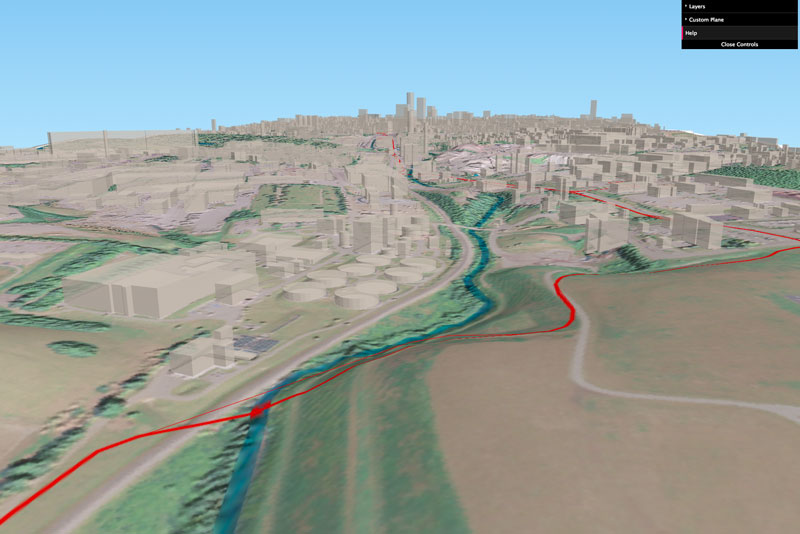

Town Branch of the Elkhorn Creek trail corridor maps


Population density maps and Town Branch

An estimated 55,000 people live within one mile of a completed Town Branch Trail
Bluegrass Springs


Town Branch Trail on shaded terrain map
Town Branch Trail on 2016 aerial photography
Town Branch Trail on 2016 estimated canopy coverage
Interactive 3D maps of trail corridor using QGIS and Qgis2threejs

Base map with 2016 aerial photography, 45 MB
Base map with 2016 aerial photography, 45 MB

Base map with hillshade and 2016 estimated canopy coverge, 25 MB
An Exploration of Town Branch Trail. Web page by Boyd Shearer for GEO 409, Spring 2017, as the University of Kentucky.
Contact me at outrageGIS.com. Peace out.